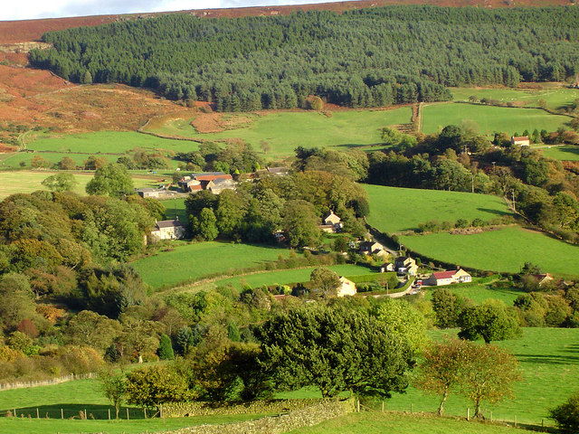
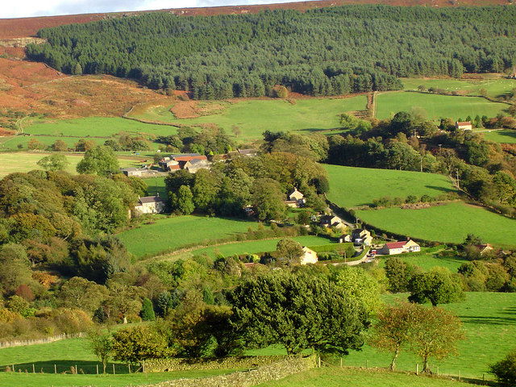
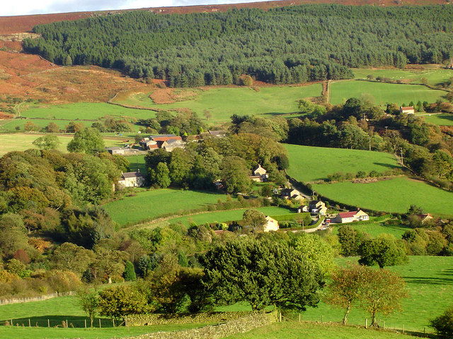
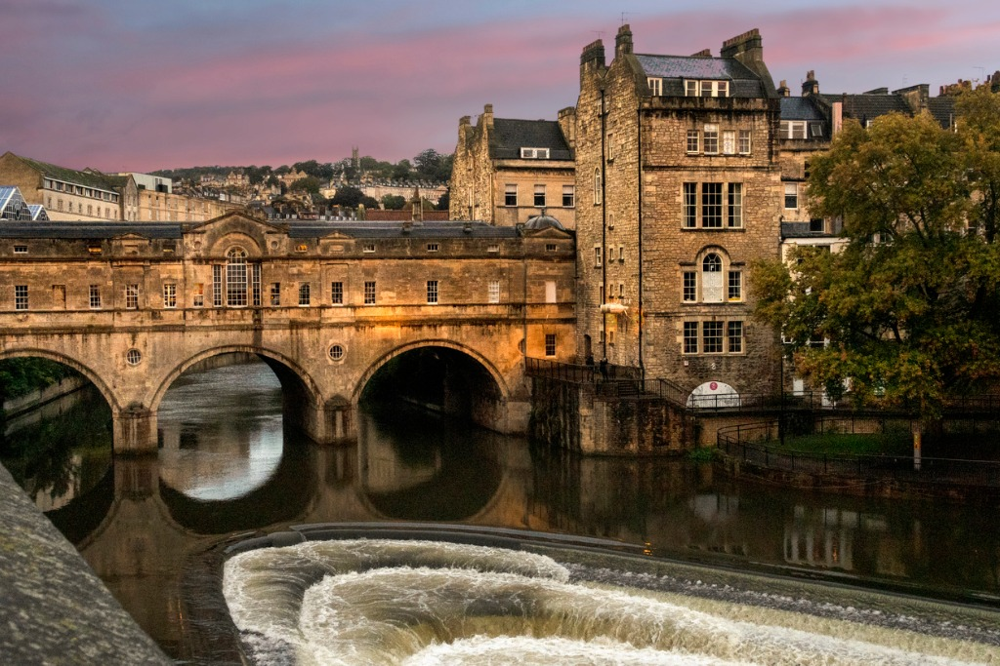

| Item | Rank |
|---|---|
| National History Museum! | B Tier |
| Nandos! | A Tier |
| Visiting Countrysides! | A- Tier |
| London | A* Tier |
| Watching football! | A* Tier!!!! |
| London Culture | A Tier |
| Harry Potter Filming Location Tour | B+ Tier |
| Peak District | A- Tier |
| Visiting Roman Baths | B- Tier |

